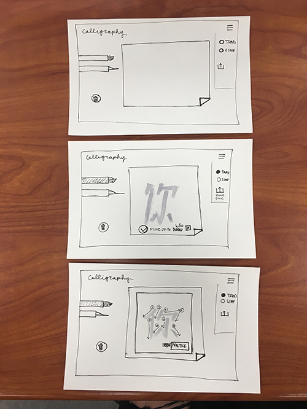

prototype 1
For the first paper prototype, I wanted to display as many screens and menu options in order for the user to get a good feel of what the application does. I included brush options, a menu bar that included options to choose between traditional and simplified as well as save the work, a color palette, and the sketch area.
prototype 2
For the second iteration, I only included 3 screens to indicate the changes made. The feedback that I got was to create a simpler menu - so using radio buttons instead of the slide bar to choose between traditional and simplified, and including the standard share icon for saving and sharing. I also got rid of the pencil in the brush options, since a user wouldn't use a pencil to write calligraphy in real life, and played around with including an animated tutorial showing how to write the character before the user practices writing the character. Feedback that I got from this was that the tutorial made it more complicated, and I should go back to the original idea of having dotted lines so the user can trace the character. Other than that, the user thought the second prototype was simple and understood how to use it without any context.